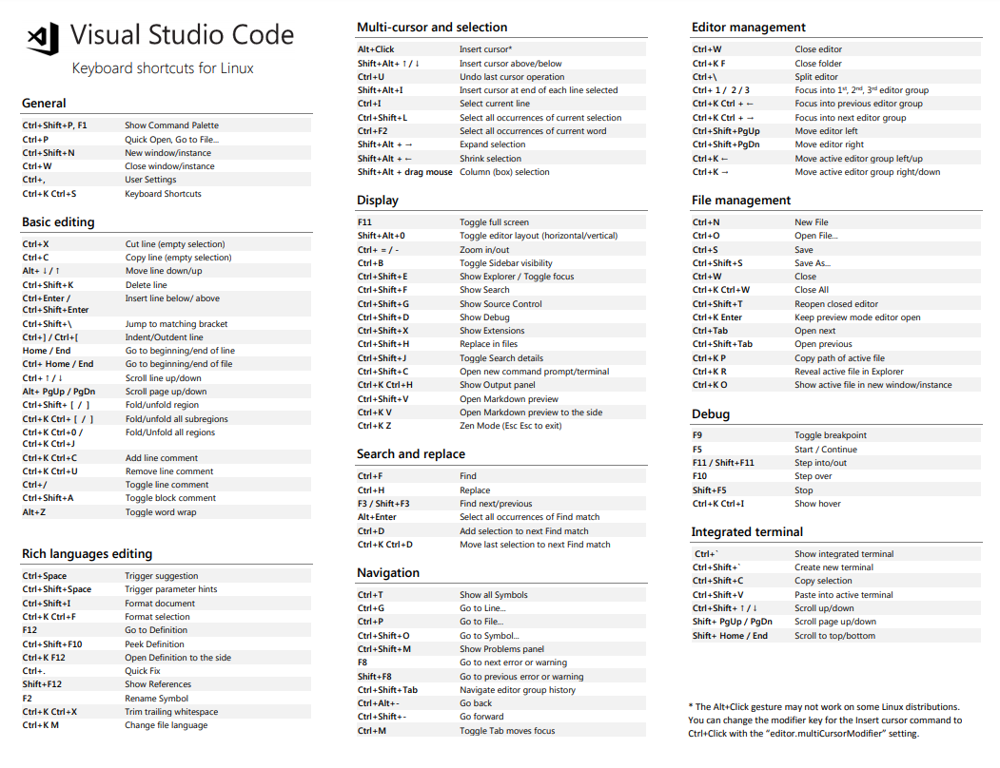

VISUAL STUDIO CODE
- Partimos del curso gratis con tips de VSCODE

EDICIONES Y TIPS BÁSICOS
SELECCIONAR ALGO
- Se apreta SHIFT + FLECHAS
QUITAR ESPACIOS
- Se apreta SHIFT + TAB
QUITAR BARRA LATERAL
- Se apreta CONTROL + b
ORDENAR LINEAS
- Se apreta ALT + FLECHA ARRIBA/ABAJO en cualquier parte de la frase y movemos para cambiar el orden:
<ul>
<li>Línea 1</li>
<li>Línea 2</li>
<li>Línea 3</li>
<li>Línea 4</li>
<li>Línea 5</li>
<li>Línea 6</li>
<li>Línea 7</li>
</ul>
- Para lineas de más de una linea se SELECCIONA TODAS LAS LINEAS y se apreta ALT + FLECHA ARRIBA/ABAJO:
<ul>
<li>
<span>línea 1</span>
<span>Nada importante 1</span>
</li>
<li>
<span>línea 2</span>
<span>Nada importante 2</span>
</li>
<li>
<li>
<span>línea 3</span>
<span>Nada importante 3</span>
</li>
<span>línea 4</span>
<span>Nada importante 4</span>
</li>
</ul>
COMENTAR CÓDIGO
-
Se apreta CONTROL + SHIFT + A o CONTROL + SHIFT + /
-
Para trozos en medio de frases solo la opción de CONTROL + SHIFT + A.
CREAR UNA RUTA DE ARCHIVO
-
Apretamos CONTROL + CLICK y creamos file de la ruta clicada y se crea todos los direcotorios y ficheros:
<script src="assets/js/app.js"></script> -
También sirve para ir a una función concreta de un archivo enlazado.
-
O vista previa sin salir del documento con SHIFT + F12.
BORRAR LINEAS
-
Borra una linea CONTROL + SHIFT + K.
-
Borrar todo que se llame igual CONTROL + SHIFT + L y CONTROL + SHIFT + K.
REHACER / DESHACER
-
CONTROL + Z deshacer.
-
CONTROL + SHIFT + Z rehacer.
ZEN MODE
- Se apreta CONTROL + K y luego Z.
NAVEGACIÓN PESTAÑAS
Ctrl + W Cerrar tab
Ctrl + K Ctrl + W Cerrar todas
Ctrl + Shift + T Reabrir anterior
Ctrl + TAB Cambiar de tab
ABRIR TERMINAL
-
Se apreta CONTROL + ` o icono abajo derecha de >.
-
Aqui se puede usar como bash normal, abrir mas terminales, matar terminal, etc.
LLAMAR A LA PALETA DE BUSQUEDA
-
Se apreta CONTROL + SHIFT + P.
-
Ejemplo de wrap with abreviation y despues como queremos encapsular unas palabras: code, ul>li...
CONFIGURAR UN SHORTCUT.
-
Manage -> keyboard shorcuts -> buscamos por ejemos wrap y ponemos la combinación que queremos.
-
Tambien CONTROL + K + CONTROL + S.
MULTICURSORES Y EDICIÓN RÁPIDA
CLONAR LINEAS
- Shortcut COPY LINE DOWN Y UP.
CREAR MULTICURSOR ARRIBA/ABAJO
- Se apreta CONTROL + SHIFT + FLECHAS y escribes una sola vez que sirve para todo.
MULTICURSOS CON COPY
- Partimos de:
<span>amarillo</span>
<span>rojo</span>
<span>verde</span>
<span>naranja</span>
<span>morado</span>
<span>negro</span>
<span>blanco</span>
- Creamos un cursos despues de span, luego nos ponemos inico de la palabra del color y CONTROL + SHIFT + FELCHA ADELANTE, copiamos, vamos para atras y pegamos:
<span class="amarillo">amarillo</span>
<span class="rojo">rojo</span>
<span class="verde">verde</span>
<span class="naranja">naranja</span>
<span class="morado">morado</span>
<span class="negro">negro</span>
<span class="blanco">blanco</span>
MULTICURSOR PARA FORMATO
-
Se crea multicursor con CONTROL + SHIFT + FLECHAS y damos espacios para quedar alineado.
-
De palabras seleccionamos con ALT copiamos, vamos para atras y pegar:
<span>amarillo</span>
<p>rojo</p>
<div-personalizado>verde</div-personalizado>
<bold>naranja</bold>
<otro-div-complejo>naranja-azul</otro-div-complejo>
<!-- Objetivo final -->
<span class="amarillo">amarillo</span>
<p class="rojo">rojo</p>
<div-personalizado class="verde">verde</div-personalizado>
<bold class="naranja">naranja</bold>
<otro-div-complejo class="naranja-azul">naranja-azul</otro-div-complejo>
LOWECASE / UPPERCASE
- Creamos multicursor y CONTROL + SHIFT + U/L
SELECCION VARIAS COSAS A LA VEZ
- CONTROL + D.
DEFINICIONES Y SNIPPETS
BUSCAR DEFINICIONES
- Ctrl + P => luego escribir la @:
- Ctrl + Shift = O
BUSCAR LINEAS
- CONTROL + P + :nºlinea
MARKDOWN PREVIEW
-
CONTROL + SHIFT + V
-
CONTROL + K V
-
Ctrl + P : Markdown Open Preview
-
Ctrl + P : Markdown Open Preview to the side
REPLACE SYMBOL
- Para reemplazar la misma palabra en todos los documentos enlazados o llamados se apreta F2.
CREAR SNIPPET
-
Es un fragmento de código ya creado y poder llamarlo.
-
Manage -> usar snippet -> elegir lenguaje.
"Print to console": {
"prefix": "log",
"body": [
"console.log('${1:Hola mundo}');",
"$2"
],
"description": "Log output to console"
}
- Lo llamamos con el nombre del 'prefix'.
EXTENSIONES
- PASTE JSON AS CODE
- TERMINAL
- TODO FREE
- BOOKMARKS
- MATERIAL ICON THEME
- MATERIAL THEME
- LIVE SERVER
- COLOR HIGHLIGHT
- BRAKET PAIR COLORIZED 2
- GIT
- https://code.visualstudio.com/docs/editor/versioncontrol
- https://code.visualstudio.com/docs/editor/github
- DOCKER
- https://marketplace.visualstudio.com/items?itemName=ms-azuretools.vscode-docker
- https://code.visualstudio.com/docs/containers/overview